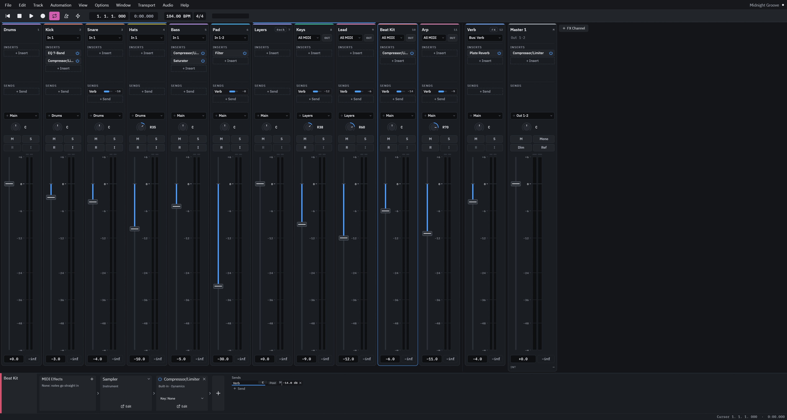
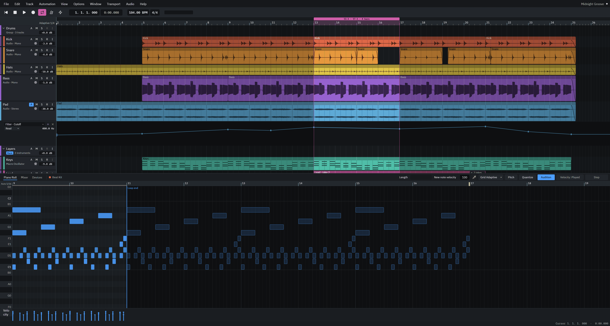
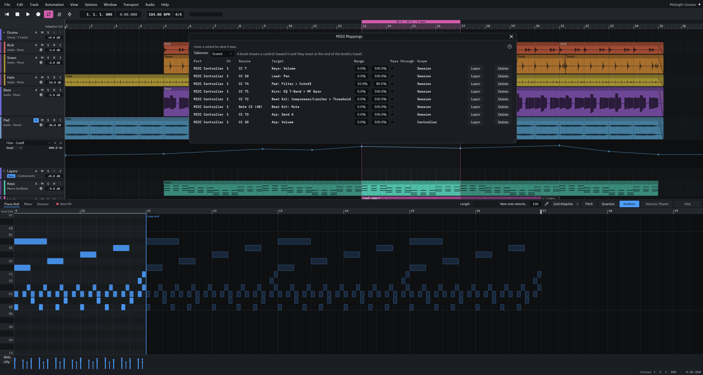
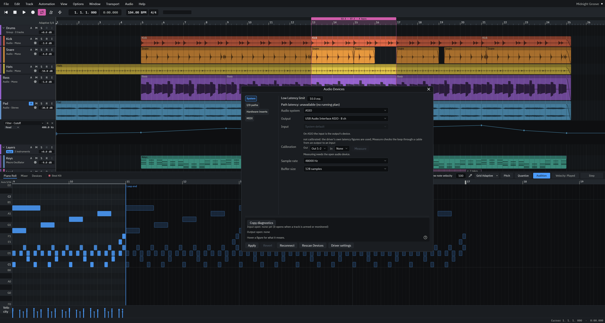

Windows
This looks like your computerPick the installer. If you would rather not install anything, the zip runs from any folder.
Download for WindowsOther formats: see the release page

Record, edit and mix music on Windows, Mac and Linux. Free and open source.
Cubase bones, Ableton manners.
transit is free. It is also early software (alpha): it changes every week, and some things are rough or missing. Back up anything you care about, and tell us what breaks on the Discord or in the testing thread.
Loading the latest release...
Pick the installer. If you would rather not install anything, the zip runs from any folder.
Download for WindowsOther formats: see the release page
Pick the DMG (for Macs with an Apple chip). Open it and drag transit to Applications.
Download for MacOther formats: see the release page
The AppImage runs on almost any system. The .deb is for Ubuntu and Debian, the .rpm is for Fedora, and the tar.gz works everywhere else.
Download for LinuxOther formats: see the release page
The downloads are not signed yet, so Windows and macOS may warn you the first time. The README shows how to open it anyway.
First start: open Audio Devices, pick your audio interface, and set the buffer size. transit measures its own latency and shows you the number.
Record a part again and again. Every take stacks up in its own lane, so you choose the one that plays. Bounce in Place turns a track into audio when you are done.
Plays CLAP and VST3 plug-ins. Each one loads on its own, so a slow or stuck plug-in cannot freeze the window.
Comes with synths such as the Macro Oscillator, Resonator and Modal Voice, a sampler, plus compressor, EQ, reverb and more.
On Windows, transit talks to your audio interface directly for low delay, and the Audio Devices window shows how much you really have.
For the curious: how changes get into transit.
We change a setting only after measuring it on real hardware, and we publish the numbers.
When a bug slips through, we write what happened and add a check so it cannot happen again.
Every design change gets a short written decision with its evidence, and every change is reviewed by someone trying to break it.
What we know is broken is in the known issues list.




Help wanted: good places to start contributing.